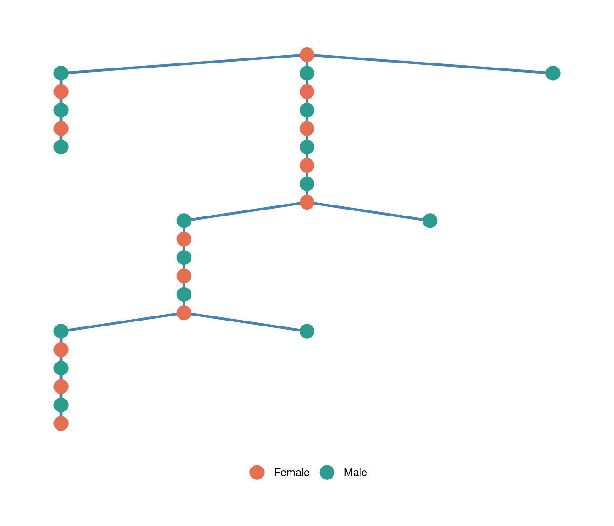
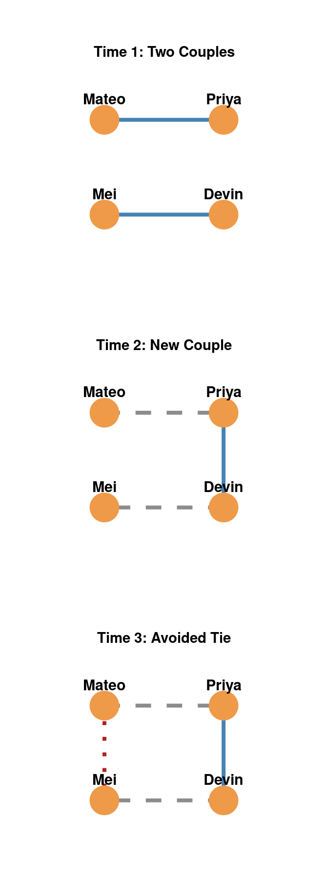
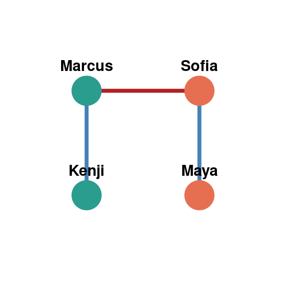
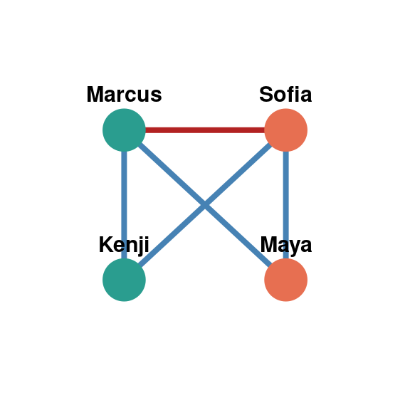
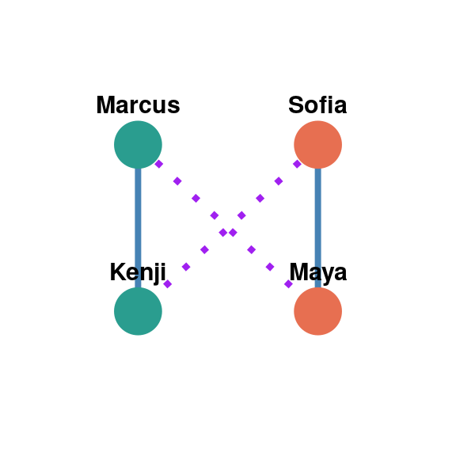

45 Micro Rules and Macro Structure: Four-Cycle Avoidance
One of the more striking phenomena in social network analysis is that a handful of small, local rules that individuals follow without any awareness of the network they are embedded in can generate large, predictable, global patterns. This chapter examines a well-studied example: how a simple proscription (read as norm that says: avoid!) against romantic “four-cycles” shapes the entire topology of adolescent dating networks, and how later research has both refined and extended this finding.
45.1 The Micro-Macro Puzzle
Romantic and sexual relationships, especially among adolescents, are intensely personal decisions. When a person decides whom to date, the last thing on their minds is something like “network topology.” Yet when researchers set about to aggregate thousands of these individual choices within a bounded population, such as a single high school, a coherent global structure emerged. The puzzle is this: what local, individual-level process could produce a particular global shape, when no individual actor has any incentive or ability to plan for it?
As we have seen in previous lessons, this is a general theme in social network analysis, related to the small-world and structural balance material covered elsewhere in this book (see sec-swt and sec-sbalance): local rules governing which ties form (or, just as importantly, which ties are avoided) can have large, often counterintuitive, consequences for global network structure.
45.2 Bearman, Moody, and Stovel’s Jefferson High Study
The foundational study here is Bearman et al. (2004), who mapped the complete romantic and sexual network of “Jefferson High,” a population of over 800 adolescents in a midwestern U.S. town, using data collected as part of the National Longitudinal Study of Adolescent Health (Add Health). Because the researchers had relationship reports for an entire bounded school population rather than an ego-centered sample, they could observe the network’s global shape directly rather than inferring it from individual reports.
Bearman, Peter S, James Moody, and Katherine Stovel. 2004. “Chains of Affection: The Structure of Adolescent Romantic and Sexual Networks.” American Journal of Sociology 110 (1): 44–91.
The result was unexpected. Rather than dense, tightly clustered pockets of daters — the pattern predicted by ordinary homophily (the tendency to date people similar to oneself; see sec-egohomo) — the observed network took the form of a single giant, sparse, tree-like component connecting more than half of the romantically active students. This component had almost no cycles: extremely few redundant paths connecting any two students by more than one route. Structurally, it resembled a spanning tree (see sec-trees) stretched out into long, fragile chains, more like a telephone or electrical grid radiating from a trunk line than a set of interlocking friend groups (Figure fig-jeffersonspan).
This is a genuine puzzle. Dense, clustered networks are the norm in most other kinds of tie formation (friendship, kinship, collaboration). A sparse, chain-like, nearly acyclic structure requires some countervailing force actively suppressing the short cycles that clustering processes would otherwise produce.
45.3 The Four-Cycle Proscription
Bearman, Moody, and Stovel located that countervailing force in a locally enforced, largely unspoken norm against completing a romantic four-cycle: dating your former partner’s current partner’s former partner. Consider four students, Mateo, Priya, Devin, and Mei:

At Time 1, Mateo dates Priya while Devin dates Mei (Figure fig-fourcycle). At Time 2, both couples break up, and Priya starts dating Devin. The network now has an open, three-tie chain: Mateo–Priya–Devin–Mei. The tie that would close the loop, Mateo and Mei getting together, is available at Time 3 — every one of these four students is single at that point, and nothing about homophily rules it out. Yet Bearman et al. found that in the actual Jefferson High network, ties like this were almost never observed: their empirical count of four-cycles was far lower than what would be expected if partners were chosen at random from the pool of eligible (single, opposite-sex) students. Completing the loop was treated as taking “leftovers,” carrying a social cost that outweighed whatever convenience or attraction might otherwise favor the tie.
The key theoretical move is recognizing that this is a negative rule — a proscription about what not to do — rather than a positive preference about whom to date. Positive preferences like homophily tend to generate clustering and redundant ties. A rule that instead blocks the closure of short cycles forces each new relationship to reach outside the existing local cluster, and it is exactly this outward-reaching pressure, repeated across thousands of dyads, that stretches a network into the long, sparse, spanning-tree shape observed at Jefferson High. Bearman, Moody, and Stovel also connect this structural outcome to disease transmission dynamics: a sparse, low-cycle network is far more fragile to targeted interventions (and far less hospitable to rapid, sustained spread) than a dense, highly clustered one — a theme developed further in the chapters on diffusion (see sec-diffusion).
45.4 Refining the Mechanism: Friendship Loyalty Over Dating Taboo
Bearman, Moody, and Stovel’s proscription — “do not date your ex’s current partner’s ex” — is a mechanism defined entirely with reference to past romantic history. McMillan et al. (2022) raised a reasonable objection: it is hard to imagine a teenager consciously reasoning in these terms. Tracking an ex-partner’s current partner’s own ex-partner requires holding an abstract, two-hop relational chain in mind — a demand that does not match how adolescents describe their own dating decisions.
McMillan, Cassie, Derek A Kreager, and René Veenstra. 2022. “Keeping to the Code: How Local Norms of Friendship and Dating Inform Macro-Structures of Adolescents’ Romantic Networks.” Social Networks 70: 126–37. https://doi.org/10.1016/j.socnet.2021.11.012.
McMillan, Kreager, and Veenstra proposed a more psychologically plausible alternative, embedded in a different relationship altogether: the dense same-sex friendship network that romantic ties are nested within. Their rule, colloquially “Girl Code” or “Bro Code,” is simply: do not date your friend’s ex-partner. This requires no abstract cycle-counting at all — only ordinary same-sex peer loyalty, a norm adolescents readily recognize and articulate (Figure fig-friendcode). Using a Dutch high school romantic network of 607 students with the same sparse, low-cycle Bearman-style structure (network density of about 0.005, with only eight observed four-cycles in the entire school), they showed statistically that once friendship-loyalty effects are accounted for in a network model, there is no remaining evidence of an independent dating-specific cycle-avoidance rule. In other words, the four-cycle proscription documented at Jefferson High appears to be a byproduct of friendship loyalty rather than a distinct romantic norm in its own right.



This friendship-mediated mechanism is worth distinguishing carefully from a similarly named idea introduced elsewhere in this book: the “4-cycle effect” in affiliation contagion (see sec-egohomo), where two people who share one social focus (say, a club) come to share a second focus as well, without any direct tie between them. Both phenomena involve a four-node, four-edge cycle, but they operate in opposite directions. Affiliation contagion describes cycles being completed through indirect institutional exposure. The romantic four-cycle proscription describes cycles being actively avoided through social sanction. The overlapping terminology is a useful reminder that “four-cycle” is a purely structural description — a closed loop of length four — and that the same motif can be produced, or suppressed, by entirely different social mechanisms depending on the type of relation involved.
45.5 Generalizing the Finding: Fiction, Sexuality, and Market Size
A useful test of whether a proposed social mechanism is real, rather than an artifact of one particular dataset, is to see whether it shows up in other settings. Two follow-up studies did exactly this using fictional television networks — settings where a writer, not a real social process, decides who dates whom.
Adams (2015) examined the romantic network among characters on the television show Glee, set at the fictional William McKinley High School. Despite writers actively engineering plot conflict — nearly half of observed on-screen romantic ties in the show are part of some four-cycle configuration — statistical models that controlled for the small size and density of the fictional cast still detected a significant, residual tendency to avoid four-cycles. This means that even television writers, who benefit dramatically from romantic entanglement and betrayal, appear to reproduce the real-world taboo when constructing believable relationships for the small screen.
Adams, Jimi. 2015. “Glee’s McKinley High: Following Middle America’s Sexual Taboos.” Network Science 3 (2): 293–95. https://doi.org/10.1017/nws.2015.16.
Marcum, Christopher Steven, Jielu Lin, and Laura Koehly. 2016. “Growing-up and Coming-Out: Are 4-Cycles Present in Adult Hetero/Gay Hook-Ups?” Network Science 4 (3): 400–405. https://doi.org/10.1017/nws.2016.3.
Marcum et al. (2016) pushed this comparison further by looking at adult (rather than adolescent) fictional and real-world sexual networks, comparing a heterosexual-majority network (the hospital drama Grey’s Anatomy) to a predominantly lesbian network (Showtime’s The L Word), alongside real-world comparison networks. They found a significant tendency to avoid four-cycles in the heterosexual-majority network, consistent with Bearman et al.’s original finding — but no such tendency in the predominantly gay network. One structural reason follows directly from graph theory: a strictly heterosexual dating network is bipartite (ties only cross between two groups; see sec-graphconnectivity), and bipartite graphs can only contain even-length cycles. A four-cycle is the shortest cycle available to enforce a taboo against in such a network, which may be part of why it became the focal point of the norm in heterosexual contexts. In same-sex dating markets, by contrast, the pool of eligible partners is typically much smaller, and rigidly enforcing a “no seconds” rule could exclude a much larger share of the population from partnering at all. Marcum, Lin, and Koehly interpret the absence of cycle-avoidance in the lesbian network as reflecting, at least in part, how heteronormative assumptions shape which relationship structures are treated as normal (and dramatized) versus stigmatized, rather than a simple structural inevitability — a reminder that “who a rule applies to” is itself a socially contingent, not purely mechanical, outcome.
45.6 Gossip, Rumor, and the Celebrity Dating Network
The studies above all rely on relationships that are directly confirmed by the people involved (or, in the fictional cases, by the show’s writers). But researchers can also study a network’s rumored ties: alleged relationships circulated by third parties as gossip, without confirmation from either partner. Because gossip is generated socially, by people applying their own normative expectations to a situation, it offers a different kind of evidence about which network configurations people treat as unusual or taboo.
Stoddard (2024), in a UCLA doctoral dissertation, built a large network of celebrity romantic and sexual relationship histories scraped from the fan-maintained site whosdatedwho.com: 109,626 nodes connected by 88,746 edges, of which 3,848 are rumored rather than confirmed relationships. Stoddard shows that adding the rumored ties into the network disproportionately increases the number of short cycles (the full network contains 477 three-cycles and 13,609 four-cycles) and increases the number of bisexual nodes, while decreasing the network’s overall heterosexual homogeneity. A companion motif analysis found that female bisexuality is especially central to how these short cycles form, and that a rumored tie typically appears as the single edge that completes an otherwise fully confirmed cycle — that is, the rumor tends to be exactly the missing link that would close a structurally “suspicious” loop.
Stoddard, Carmella Nicole. 2024. “Allegations of Affection: The Impact of Rumored Ties on Short Cycles, Node Sexuality, and Age-Gapped Pairings in a Celebrity Romantic Relationship Network.” PhD thesis, University of California, Los Angeles.
This adds an important wrinkle to the four-cycle story. Gossip and rumor are not simply noisy static layered on top of a confirmed relationship network; they are disproportionately attracted to precisely the ties that would violate the cycle-avoidance and sexuality norms already discussed in this chapter. Third parties appear to apply the same “who should date whom” heuristics as the people directly involved, using gossip as an informal, low-cost way to flag, and implicitly sanction, configurations the community treats as norm-violating, even when no one can confirm the tie is real.
45.7 Takeaways
Four-cycle avoidance in romantic networks is a compact illustration of a much broader principle in social network analysis: global network structure is often the aggregate signature of local, negative rules, not just local positive preferences. A few implications worth carrying forward:
- Restraint, not just attraction, shapes structure. Analyses of tie formation often focus on what draws people together (homophily, proximity, shared foci). The Jefferson High case shows that what people avoid can be just as structurally consequential, and can push a network toward a shape — sparse, tree-like, low-clustering — that attraction-based mechanisms alone would never produce.
- The same structural motif can arise from different mechanisms. A four-cycle can be avoided (romantic proscription) or produced (affiliation contagion) depending on the social process generating it; identifying a motif is only the first step, not the explanation.
- Findings should be checked for robustness and boundary conditions. McMillan, Kreager, and Veenstra showed the original mechanism could be re-derived from a more parsimonious, more psychologically plausible rule. Marcum, Lin, and Koehly showed the original finding does not automatically generalize across all relationship markets, and that the reasons for that boundary are themselves sociologically interesting.
- Fiction can be real data. Even invented storylines, because they are written by people drawing on internalized social expectations, can encode and reveal the same structural norms found in real populations.
- Even unconfirmed ties carry structural information. Gossip and rumor are not random noise: the ties people speculate about are disproportionately the ones that would violate an existing structural or sexuality norm, making rumored-tie data a further, independent window onto the same underlying rules.